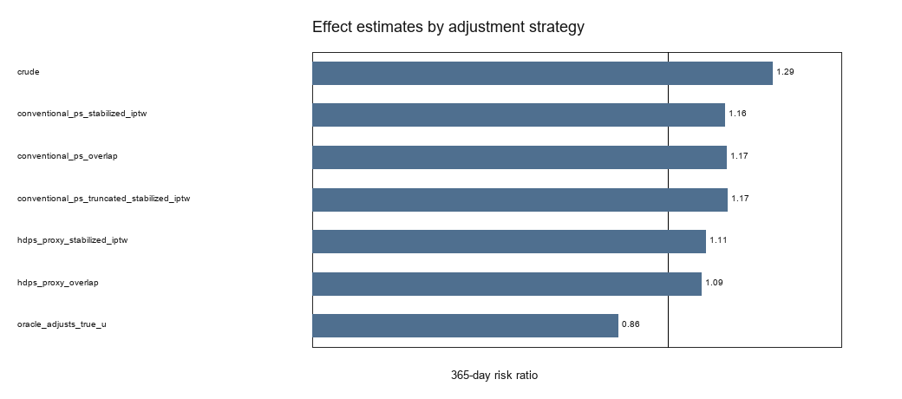
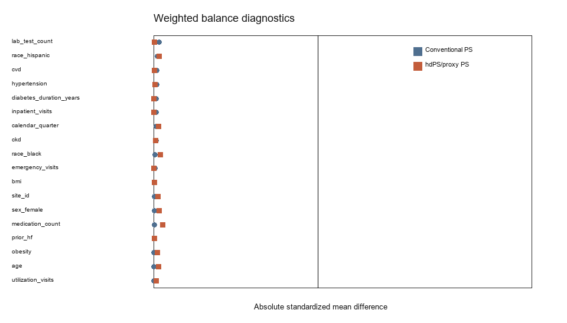
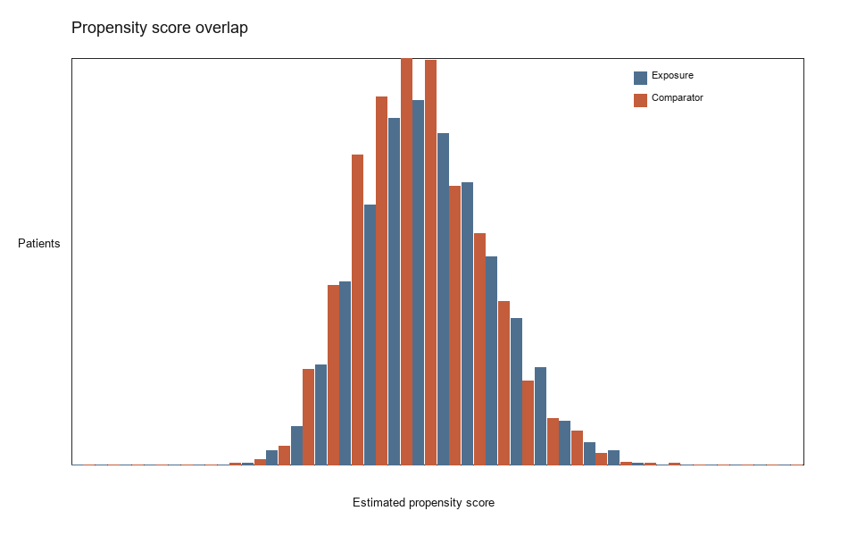
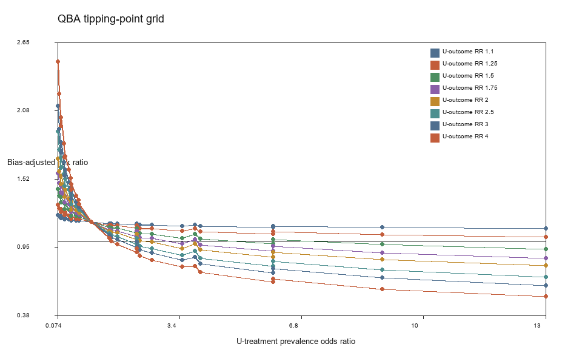

eligible synthetic new users after exclusions
Observational Drug Safety / Effectiveness Workbench
SGLT2 vs GLP-1: 1-Year Heart-Failure Hospitalization
Among adults with type 2 diabetes initiating an SGLT2 inhibitor versus a GLP-1 receptor agonist, what is the effect on 1-year hospitalization for heart failure?
Residual Confounding Credibility
Moderate
Sensitivity or simulation results leave a material residual-confounding concern.
conventional measured-confounder stabilized IPTW
pre-index proxy-rich adjustment
synthetic-only adjustment for true latent U
Effect Estimates

Balance

Overlap

QBA Tipping Grid

What The Synthetic Demo Found
Primary analysis: conventional measured-confounder IPTW estimated RR 1.16 and RD 0.02.
Proxy-rich analysis: hdPS/proxy IPTW shifted the RR to 1.11, moving toward the oracle estimate but not proving latent confounding was removed.
Negative control: Adjusted negative-control RR 0.94; residual association detected: False.
QBA: 29 configured grid scenarios moved the estimate into the clinically unimportant range.
Simulation: maximum false-reassurance rate across configured stress scenarios was 1.00.
Public Interpretation
This is a reproducible methods workbench, not a real-data treatment recommendation. The demo uses synthetic data with known latent confounding to show where a standard propensity-score design can look healthy while still being biased.
Methods, assumptions, and review needs